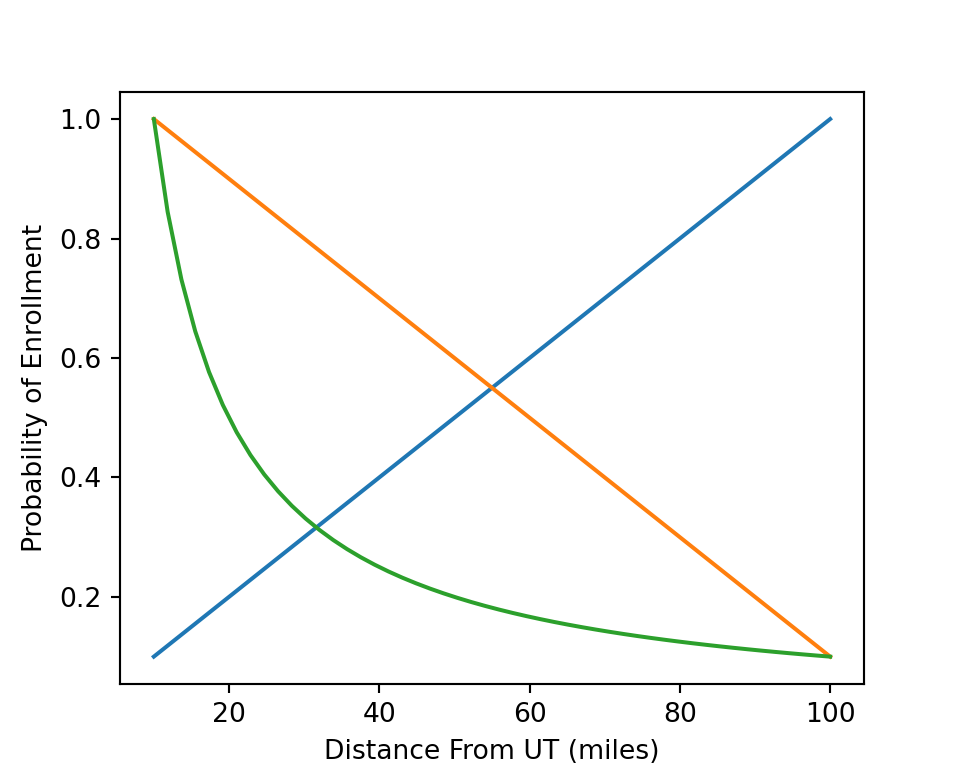
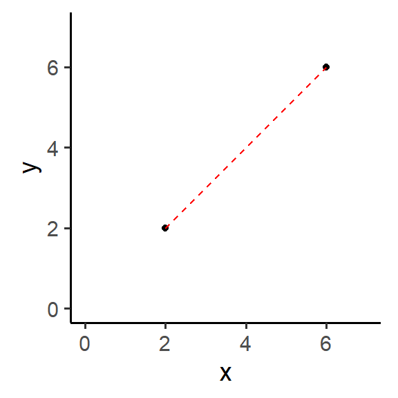
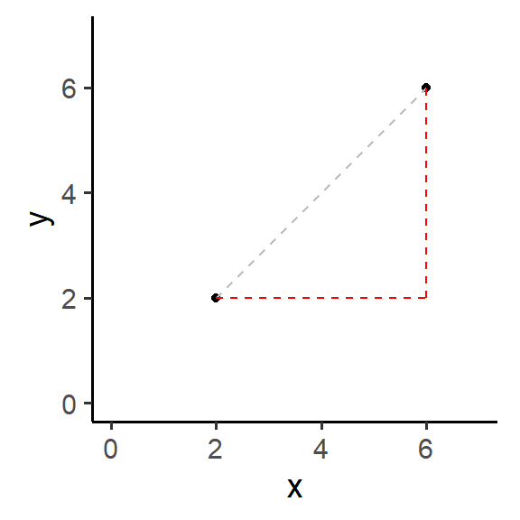

Distance Calculations in Spatial Analysis
Application in R
S. L. Carter
University of Toledo
October 1, 2025
Introduction
Objectives
- Understand why considering distance is important.
- Understand the different types of distance calculations.
- Know how to apply the calculations in software.
Motivation
Why should we care about distance?
Salt Lake City, Utah at Night (NASA2Explore on Flickr)
Real Life Example
Say you need to go to the grocery store.
What factors do you consider when deciding which store to pick?
Statistical Example
College Enrollment Choices
Students consider distance and location when choosing where to go to college.
Question: What kind of relationship could distance have with the probability of enrollment?
Outline
Wednesday 10/1/2025
- Definition, history, and application of two types of distance in Euclidean geometry.
- Plus a game and bonus topic.
- Basic exploration into using Python/R to calculate distance.
Monday 10/6/2025
- Definition of spherical distance calculations.
- Lab/Workshop using R to calculate distances for real-life data.
Distance in Euclidean Geometry
Types of Distance Calculations
- Euclidean
- Manhattan
- (Bonus) Generalization
Euclidean Distance
(Also known as the Pythagorean Distance.)
What is the formula?
\[ \begin{aligned} d^2 &= {(\Delta x)}^2 + {(\Delta y)}^2 \\ d &= \sqrt{{(\Delta x)}^2 + {(\Delta y)}^2} \end{aligned} \]
What does that look like?

Euclidean Distance (History)
- Named after Greek mathematician Euclid (~300 BC).
- Similar to the Pythagorean theorem.
- Published in 1731 by Alexis Clairaut.
Euclidean Distance (Application)
What would you use this for?
- Geography: Measuring distance across flat surfaces.
- Physics: Measuring distance between two objects.
- Computer Science
- Clustering algorithms in machine learning.
- Similarity metrics. (Easily extended to higher dimensions.)
Manhattan Distance
What might this be?
Hint: Think about the name…
- Distance following a grid pattern.
- It is also called the taxicab or city block distance referring to street layouts in large cities.
Manhattan Distance
What is the formula?
\[ d = |x_2 - x_1| + |y_2 - y_1| \]

Manhattan Distance (History)
- First used in 1757 by Roger Joseph Boscovich.
- The taxicab name came from Karl Menger in 1952.
Manhattan Distance (Application)
- Regression Analysis
- Calculating residuals (one dimensional)
- Transportation
- Driving distance; distance along a path.
Side Quest
- The numbers on a Minesweeper board can be thought of as a count of bombs with a Chebyshev distance of one.
- Chebyshev distance is basically Manhattan distance but you take the longer of the two dimensions.
https://share.google/A8GwhLEpInZkv5YSS
(or search Minesweeper on Google)
- Chebyshev distance has application in board games. Think of moving based on a dice roll.
Visualization

By Cmglee - Own work, CC BY-SA 4.0, https://commons.wikimedia.org/w/index.php?curid=140170366
Bonus: Generalized Distance in Euclidean Geometry
How can we generalize our distance formulas into a single equation?
\[ D(X,Y) = \left(\sum_{i=1}^n {|x_i - y_i|}^p \right)^{1/p} \]
| \(p\) | Distance Type |
|---|---|
| 1 | Manhattan |
| 2 | Euclidean |
| \(\infty\) | Chebyshev |
This also connects to Lebesgue spaces (\(L^p\)) in mathematics.
Visualization

By Quartl - Own work, CC BY-SA 3.0, https://commons.wikimedia.org/w/index.php?curid=17428655
Exploration in Python and R
Manhattan Distance
\[ \begin{aligned} D(A,B) &= |a_1 - b_1| + |a_2 - b_2| \\ &= \sum_{i=1}^n |a_i - b_i| \end{aligned} \]
Python
Euclidean Distance
\[ \begin{aligned} D(A,B) &= \sqrt{{(a_1 - b_1)}^2 + {(a_2 - b_2)}^2} \\ &= \left(\sum_{i=1}^n {(a_i - b_i)}^2\right)^{1/2} \end{aligned} \]
Python
Homework
- Please install the
{spData}package for R. It has a dataset which we will be using on Monday.- You will also need R,
{tidyverse},{sf}, and{geosphere}installed; it is free and works on Windows and Mac just fine (and Linux with some difficulty). - Email me or see me after class tomorrow if would like help with installation.
- You will also need R,
- On Monday we will go through calculating distance with Lucas county housing prices.
Homework (Bonus)
- Write a Python and/or R function to generalize distance in Euclidean geometry.
- Try to use the function a few times to make sure it works correctly for \(p\) equal to 1, 2, and (optionally) \(\infty\).
- AI should be helpful if you get stuck.
\[ D(X,Y) = \left(\sum_{i=1}^n {|x_i - y_i|}^p \right)^{1/p} \]
Spherical Geometry
Geographical Distance Methods
- There are several levels of complexity to measure distance on Earth.
- Euclidean distance. (Think back to last class.)
- Spherical distance.
- Ellipsoidal distance.
- The best choice depends on your needed accuracy.
- What scenarios would be suited to each type of distance?
- Euclidean distance
- Local, short-range points; e.g. At a city or neighborhood level.
- Spherical distance
- Longer distances where accuracy is important but not absolutely critical. (Has about 0.5% error, Wikipedia.)
- Ellipsoidal distance
- Long distances where you want to be very accurate.
Spherical Distance
It’s complicated…

\[ \text{hav}(\Delta\sigma) = \text{hav}(\Delta\phi) + \cos(\phi_1)\cos(\phi_2)\text{hav}(\Delta\lambda) \]
- \(\phi\) is latitude, \(\lambda\) is longitude.
- \(\Delta\sigma\) is the central angle (in degrees) between the points.
- \(\text{hav}(\Delta\sigma) = \sin^2\left(\frac{\Delta\sigma}{2}\right)\)
- Then the distance is \(\Delta\sigma\) converted to radians and multiplied by the average radius of the Earth, \(D(P,Q) = r \cdot \Delta\sigma\).
- See Wikipedia for more details.
- There are several methods with accuracy and simplicity trade-offs.
Haversine Calculation
It is best to let packages/libraries to handle this for you.
Python: haversine
R: {geosphere}
Ellipsoidal Distance
- Spherical distance is probably fine, but the Earth isn’t an exact sphere.
- Discovered by Newton in 1687.
- Vincenty’s formulae (1975) can be used for distances on a spheroid.
- The formulae are complicated, requiring spherical coordinates and calculus.
- The exact solution depends on what GCS you are using.
- I’m don’t going to confuse you with the calculation. I would also be confused.
Ellipsoidal Calculation
Again, it is best to let packages/libraries to handle this for you.
Python: vincenty
R: {geosphere}
Lab Time
SISS7020